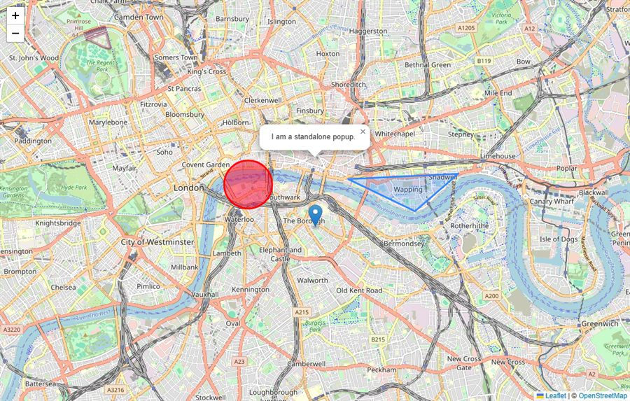
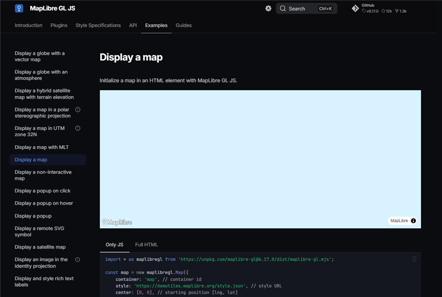
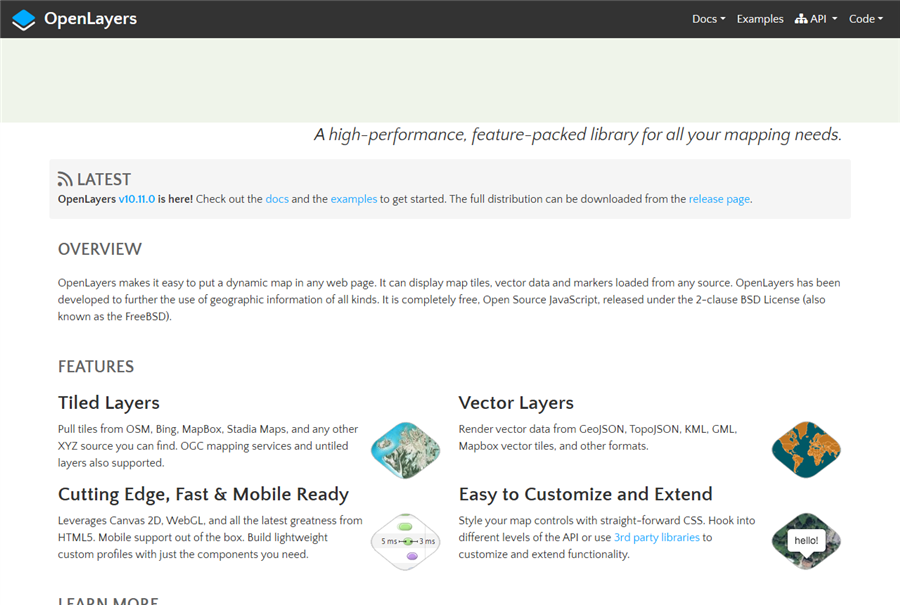
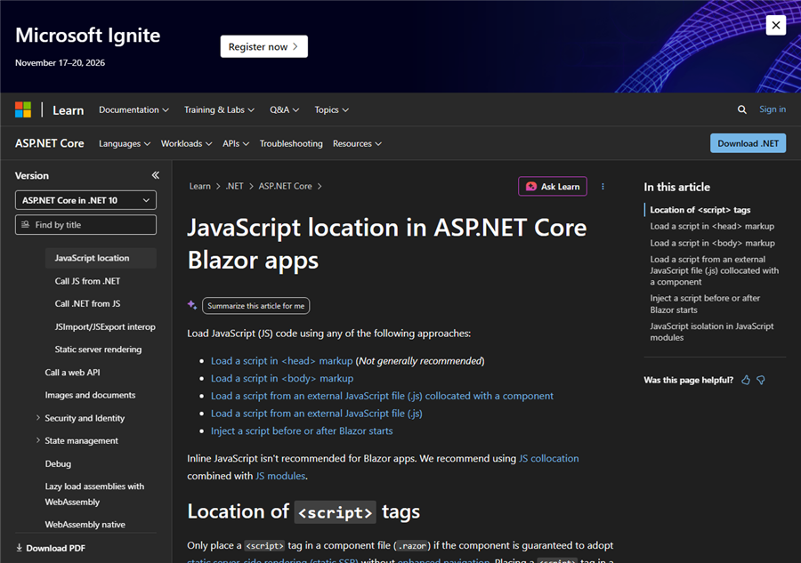
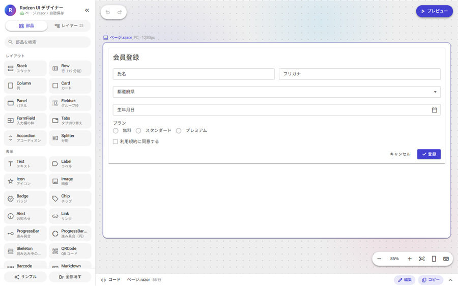

結論
Blazor と地図ライブラリの間には、次の3層を置きます。
- ラッパーコンポーネント（C#）：ページから見えるのはこれだけ。表示位置・ピン・クリックを、パラメーターとイベントで扱う
- 接着用の ES モジュール（自作の JS）：ライブラリの API を
create・setView・setPins・disposeの4つの関数に包む - ライブラリ本体：Blazor が中身を描かない空の要素を1つ渡し、その中だけを任せる
地図で特に決めておくのは、表示位置をどちらが持つかです。ドラッグ中の位置は JS 側だけが持ち、C# には止まったとき（moveend）に1回だけ知らせます。C# から地図を動かすのは、パラメーターが地図の表示と違うときだけにします。こうすると、C# と JS の間で位置の更新が往復し続けることがありません。
ライブラリは、ピンや範囲を描く程度なら Leaflet 1.9.4、件数が多い・見た目を作り込むなら MapLibre GL JS を勧めます。
構成図
各層の役割
| 層 | ファイルと置き場所 | 受け持つこと | 持たせないこと |
|---|---|---|---|
| ラッパーコンポーネント | Components/MapPanel.razor | パラメーターの受け取り、JS 参照の保持、作成・更新・片付けの順番、地図の表示位置（shown）の記録、JS からの通知を EventCallback に変換 | ライブラリ固有の API 呼び出し |
| 接着用モジュール | Components/MapPanel.razor.js（.razor の隣に置く collocated JS） | 地図の生成と破棄、ピンの差分の反映、moveend とクリックを invokeMethodAsync で C# に通知、大きさの変化への追従 | ピンの一覧など画面の状態（正しい値は C# 側が持つ） |
| ライブラリ本体 | wwwroot/lib/leaflet/（JS・CSS・画像） | タイルとマーカーの描画、ドラッグやズームの操作 | Blazor が描いた要素への書き込み |
層を分ける理由は3つあります。1つ目は、ライブラリを差し替えても直すのが接着用モジュールだけで済むことです。Leaflet は 2.0 で書き方が変わる予定なので、この点が実際に役立ちます。2つ目は、境界を越える呼び出しが4種類に限られ、回数を数えやすいことです。3つ目は、片付けの漏れを1か所で確かめられることです。
呼び出しの流れ
- 作る：
OnAfterRenderAsyncの初回で行います。この時点でhost要素が DOM にあり、JS も動いています。OnInitializedではまだ要素が無く、プリレンダリング中は JS も動いていません。 - 更新：ピンの一覧が変わったときだけ
setPinsを呼びます。ピンは配列でまとめて渡し、JS 側が id ごとに追加・移動・削除を判断します。 - 地図を動かす：ドラッグ中の
moveは1秒に何十回も起きるので送りません。止まったときのmoveendで1回だけOnViewChangedを呼びます。C# はshownを更新してからViewChangedを発火します。親が同じ位置をViewに書き戻しても、shownと一致するのでsetViewは呼ばれません。 - 片付け：JS 側の
disposeで地図を破棄してから、C# 側の参照を解放します。順番を逆にすると、JS 側を破棄する手段がなくなります。
地図ライブラリの選び方



| ライブラリ | 地図の描き方 | 版（2026-11-09 の npm） | ライセンス | 向いている場面 | 注意 |
|---|---|---|---|---|---|
| Leaflet 一般的な用途 | タイル画像を並べ、マーカーや図形は DOM・SVG・Canvas で描く | 1.9.4（latest）。2.0 は 2.0.0-beta.2 でプレリリース | BSD-2-Clause | ピンを置く、範囲を描く、といった一般的な地図。API が小さく覚えやすい | 2.0 は ES モジュールのみ・クラス形式の API に変わる。接着用モジュールに閉じ込めておけば、直すのはその1ファイルで済む |
| MapLibre GL JS 件数が多いとき | ベクタータイルを WebGL で描く | 6.17.0（6 系は ES モジュールのみ、WebGL2 が必須） | BSD-3-Clause | 数万件の点、地図の回転・傾き、地図のスタイルの切り替え | WebGL2 が使えない環境では表示できない。ベクタータイルとスタイルの配信元が必要 |
| OpenLayers | タイル画像とベクタの両方。Canvas・WebGL | 10.11.0 | BSD-2-Clause | 座標系の変換、WMS などの GIS 機能 | API が大きく、最初に覚えることが多い |
| RadzenGoogleMap | Google マップ（Radzen.Blazor に同梱） | Radzen.Blazor 12.1.11 に同梱 | Google Maps Platform の利用規約 | JS を書かずに Radzen だけで済ませたい | ApiKey と MapId が必要。Google Maps Platform の料金がかかる |
どのライブラリを選んでも、この構成はそのまま使えます。変わるのは接着用モジュールの中身だけです。たとえば MapLibre GL JS なら、invalidateSize() が resize() になり、ピンはマーカーではなく GeoJSON のソースとして渡すのが向いています。
実装例：Leaflet をつなぐ
1. ライブラリを wwwroot に置く
Leaflet 1.9.4 の npm パッケージは、入口が UMD 形式のファイル（dist/leaflet-src.js）だけです。そのままでは ES モジュールとして import できないため、esbuild で1つの ES モジュールにまとめます。CSS と画像は、互いの位置関係を保ったままコピーします。
// js-src/leaflet-entry.js
import L from "leaflet";
export default L;npm install leaflet@1.9.4 esbuild --save-dev
npx esbuild js-src/leaflet-entry.js --bundle --format=esm --minify --outfile=wwwroot/lib/leaflet/leaflet.bundle.js
cp node_modules/leaflet/dist/leaflet.css wwwroot/lib/leaflet/
cp -r node_modules/leaflet/dist/images wwwroot/lib/leaflet/<!-- wwwroot/index.html の <head> に足す -->
<link rel="stylesheet" href="lib/leaflet/leaflet.css" />2. 接着用モジュール（MapPanel.razor.js）
// MapPanel.razor.js — Leaflet を C# から使うための接着層
// import のパスは、このファイルの URL から見た相対パス
import L from "../lib/leaflet/leaflet.bundle.js";
export function create(host, view, dotnet) {
const map = L.map(host).setView([view.lat, view.lng], view.zoom);
L.tileLayer("https://tile.openstreetmap.org/{z}/{x}/{y}.png", {
maxZoom: 19,
attribution: '© <a href="https://www.openstreetmap.org/copyright">OpenStreetMap</a> contributors',
}).addTo(map);
// ドラッグ中の move は送らず、止まったときに1回だけ C# に知らせる
map.on("moveend", () => {
const c = map.getCenter();
dotnet.invokeMethodAsync("OnViewChanged", c.lat, c.lng, map.getZoom());
});
// 非表示のタブやダイアログの中で作られても、表示されたときに大きさを取り直す
const resize = new ResizeObserver(() => map.invalidateSize());
resize.observe(host);
const markers = new Map(); // ピンの id → Leaflet のマーカー（JS 組み込みの Map）
// C# はこのオブジェクトを IJSObjectReference として受け取る
return {
setView(lat, lng, zoom) {
map.setView([lat, lng], zoom);
},
// ピンは配列でまとめて受け取り、id ごとに追加・移動・削除する
setPins(pins) {
const keep = new Set(pins.map(p => p.id));
for (const [id, m] of markers) {
if (!keep.has(id)) { m.remove(); markers.delete(id); }
}
for (const p of pins) {
const m = markers.get(p.id);
if (m) { m.setLatLng([p.lat, p.lng]); continue; }
const added = L.marker([p.lat, p.lng], { title: p.title }).addTo(map);
added.on("click", () => dotnet.invokeMethodAsync("OnPinClicked", p.id));
markers.set(p.id, added);
}
},
dispose() {
resize.disconnect();
map.remove();
},
};
}3. 位置とピンの型
// MapTypes.cs
public sealed record MapView(double Lat, double Lng, double Zoom)
{
// moveend で返ってくる値は浮動小数点の誤差を含むので、十分に近ければ同じとみなす
public bool IsNear(MapView o) =>
Math.Abs(Lat - o.Lat) < 1e-7 && Math.Abs(Lng - o.Lng) < 1e-7 && Math.Abs(Zoom - o.Zoom) < 1e-3;
}
public sealed record MapPin(string Id, double Lat, double Lng, string Title);緯度・経度・ズームは1つの MapView にまとめて渡します。別々のパラメーターにして @bind すると、緯度だけが更新された途中の状態で setView が呼ばれることがあります。
4. ラッパーコンポーネント（MapPanel.razor）
@implements IAsyncDisposable
@inject IJSRuntime JS
<div @ref="host" class="map-host"></div>
@code {
[Parameter] public MapView View { get; set; } = new(35.681, 139.767, 13);
[Parameter] public EventCallback<MapView> ViewChanged { get; set; }
[Parameter] public IReadOnlyList<MapPin> Pins { get; set; } = [];
[Parameter] public EventCallback<string> OnPinClick { get; set; }
ElementReference host;
IJSObjectReference? module;
IJSObjectReference? map;
DotNetObjectReference<MapPanel>? self;
MapView? shown; // 地図にいま表示されている位置
IReadOnlyList<MapPin>? sentPins; // 最後に JS へ渡したピン
protected override async Task OnAfterRenderAsync(bool firstRender)
{
if (!firstRender) return;
module = await JS.InvokeAsync<IJSObjectReference>("import", "./Components/MapPanel.razor.js");
self = DotNetObjectReference.Create(this);
shown = View;
map = await module.InvokeAsync<IJSObjectReference>("create", host, View, self);
await SyncPinsAsync();
}
protected override async Task OnParametersSetAsync()
{
if (map is null) return;
// 地図の表示と違うときだけ動かす。moveend からの書き戻しはここで止まる
if (shown is null || !shown.IsNear(View))
{
shown = View;
await map.InvokeVoidAsync("setView", View.Lat, View.Lng, View.Zoom);
}
await SyncPinsAsync();
}
async Task SyncPinsAsync()
{
// 同じリストなら送らない。ピンを変えるときは親がリストを作り直して渡す
if (map is null || ReferenceEquals(Pins, sentPins)) return;
sentPins = Pins;
await map.InvokeVoidAsync("setPins", Pins);
}
[JSInvokable]
public Task OnViewChanged(double lat, double lng, double zoom)
{
shown = new MapView(lat, lng, zoom);
return ViewChanged.InvokeAsync(shown);
}
[JSInvokable]
public Task OnPinClicked(string id) => OnPinClick.InvokeAsync(id);
public async ValueTask DisposeAsync()
{
try
{
if (map is not null) { await map.InvokeVoidAsync("dispose"); await map.DisposeAsync(); }
if (module is not null) await module.DisposeAsync();
}
catch (JSDisconnectedException) { } // Server で回線が切れた後は JS を呼べない
self?.Dispose();
}
}/* MapPanel.razor.css — 高さを決めないと地図は表示されない */
.map-host { height: 480px; }5. 使う側
<MapPanel @bind-View="view" Pins="shops" OnPinClick="ShowShop" />
<ShopDetail ShopId="@selectedId" />
@code {
MapView view = new(35.681, 139.767, 13);
IReadOnlyList<MapPin> shops = [];
string? selectedId;
void ShowShop(string id) => selectedId = id;
}ページは Leaflet の存在を知りません。クリックしたピンの詳細は、地図の横に置いた Blazor のコンポーネント（ここでは ShopDetail）に出します。
C# の record は、JS に渡すときに camelCase の JSON に変換されます。MapView.Lat は JS では view.lat、MapPin.Id は p.id になります。
地図ライブラリで気をつけること
| 問題 | 起きること | 対策 |
|---|---|---|
| 表示位置の往復 | C# から setView → moveend → ViewChanged → 親が View を更新 → また setView、と続く。誤差で値がずれると止まらない | ラッパーが shown を持ち、パラメーターと十分に違うときだけ setView を呼ぶ |
View を片方向だけで渡す | 利用者が地図を動かしたあと、親が別の理由で描き直すと、地図が最初の位置に戻る | View を渡すなら @bind-View で受け取る。位置を管理しないなら View を渡さない |
| ドラッグ中のイベント | move や mousemove を毎回 C# に送ると、Server では通信があふれ、WebAssembly でも描き直しが重なる | moveend だけを送る。マウス位置の座標表示などは、JS が自分の DOM に直接書く |
| 大きさ 0 のまま作られる | 非表示のタブやダイアログの中で作ると、地図が灰色のまま、またはタイルが一部しか出ない | ResizeObserver で invalidateSize() を呼ぶ（MapLibre は resize()）。host には CSS で高さを必ず決める |
host 要素が作り直される | @if で地図を出し入れしたり @key が変わったりすると、div ごと地図が消える。JS 側の地図は残ったまま | 隠すだけなら CSS で非表示にする。出し入れするなら、コンポーネントごと出し入れして DisposeAsync を通す |
| ピンの数が多い | 1件ずつ JS を呼ぶと、境界を何千回も越える。Leaflet の通常のマーカーは DOM 要素なので、数千件で重くなる | 配列でまとめて渡し、JS 側で差分を取る。Leaflet なら preferCanvas と circleMarker、またはクラスタリングのプラグインを使う。数万件なら MapLibre GL JS の GeoJSON ソースを使う |
| ポップアップに Blazor の部品を出したい | JS が作った DOM の中には、Blazor の部品を普通の書き方では描けない | クリックで id を C# に知らせ、詳細は地図の横の Blazor のパネルに出す。ポップアップの中身が文字だけなら JS 側で作る |
| CSS と画像の置き場所 | leaflet.css が無いとタイルがばらばらに並ぶ。CSS だけ移して画像を置き忘れると、マーカーの画像が出ない | leaflet.css と images/ を同じフォルダに置き、index.html で CSS を読み込む |
| CSS isolation が中に届かない | MapPanel.razor.css の指定は、Blazor が描いた host 要素にしか付かない。Leaflet が作った要素には付かない | Leaflet の要素の見た目を変えるときは ::deep を付けるか、通常の CSS ファイルに書く |
| タイルの配信元 | tile.openstreetmap.org には利用規約があり、大量のアクセスや本番のサービスには向かない。帰属表示も必須 | 試作には使ってよいが、本番では契約したタイル配信サービスか、自前のタイルサーバーを使う |
JS の読み込み方と呼び出し方の選択肢

| 方法 | 書き方 | Server | 向いている場面 | 欠点 |
|---|---|---|---|---|
ES モジュール ＋ IJSObjectReference 推奨 | JS.InvokeAsync<IJSObjectReference>("import", "./x.razor.js") | 動く | ほぼすべて。部品ごとに JS を閉じ込められる | 接着用の JS を1ファイル書く必要がある |
| window に置いたグローバル関数 | <script> で読み込み、JS.InvokeVoidAsync("myMap.init", …) | 動く | 数行で済む使い捨ての処理 | 名前がぶつかる。読み込み順に左右される。Microsoft も本番ではモジュールを勧めている |
.NET 10 の InvokeConstructorAsync / GetValueAsync / SetValueAsync | JS.InvokeConstructorAsync("L.Map", host)（グローバルの L がある場合） | 動く | 接着用の JS を書かずに、ライブラリのオブジェクトを C# から直接作って操作する | 呼び出しが細かくなり、境界を越える回数が増える。ライブラリの API が C# 側に出てくる。イベントの受け取りは結局 JS が要る |
[JSImport] / [JSExport] | [JSImport("create", "map-panel")] static partial JSObject Create(...) | 動かない（WebAssembly 専用） | WebAssembly だけで動かし、呼び出し回数がとても多い処理 | Server と Auto では使えない。RCL の collocated JS にも対応していない |
| 既存のラッパー NuGet | RadzenGoogleMap など | 動く | 欲しい部品がすでにある | ライブラリの新しい版への追従が遅れることがある。細かい設定が公開されていないことがある |
.NET 10 の新しい API は、接着用モジュールの代わりではなく補助として使います。たとえば、地図の現在の境界を1回読むだけのために JS 関数を足したくないときに GetValueAsync を使います。
WebAssembly でしか動かさない場合は、IJSInProcessObjectReference を使うと同期呼び出しもできます。ただし Server や Auto に移すと使えなくなります。部品を使い回す予定があるなら、非同期の IJSObjectReference に揃えておくほうが安全です。
どの JS ライブラリにも共通する注意
- Blazor が描いた要素の中身を JS で書き換えない。Blazor は自分が描いた DOM の記録と比べて差分だけを更新します。JS が中身を変えると記録と実物が食い違い、表示が崩れたり例外が出たりします。ライブラリには、Blazor が子要素を描かない空の
<div @ref>を渡します。 - ブラウザはパッケージ名だけの import を解決できない。
import L from "leaflet"はそのままでは読み込めません。esbuild などで1ファイルにするか、import map を使います。CDN から直接読む方法は、オフラインで動かず、版の固定も別に管理が必要になります。 - 大きなデータは JSON にしない。
byte[]はバイナリのまま渡ります（.NET 6 以降）。さらに大きいデータはDotNetStreamReferenceでストリームとして渡します。 - 片付けを忘れない。JS の
disposeを呼ばないと、ライブラリが登録したイベントや ResizeObserver が残ります。DotNetObjectReferenceをDisposeしないと、C# のコンポーネントがメモリから解放されません。 [JSInvokable]は外から呼べる入口として扱う。Server では、利用者のブラウザから任意の引数で呼ばれる可能性があります。ピンの id などは、C# 側の一覧にあるか確かめてから使います。
このプロジェクトでの当てはめ

Designer.razor と designer.js は、この構成と同じ形で書かれています。違いは、包んでいるのが外部のライブラリではなく自作の処理だという点だけです。キャンバスの拡大・移動を JS が持ち、決まった時点で C# に知らせる点は、地図の表示位置の扱いと同じです。
| 構成図の要素 | このプロジェクトでの実装 | 場所 |
|---|---|---|
| モジュールの読み込み | JS.InvokeAsync<IJSObjectReference>("import", "./js/designer.js") | Pages/Designer.razor:139 |
| 作成と、操作用オブジェクトの受け取り | module.InvokeAsync<IJSObjectReference>("init", appEl, selfRef) | Pages/Designer.razor:141 |
| 接着用モジュールが返すオブジェクト | { refresh(), fit(), dispose() } | wwwroot/js/designer.js:734 |
| JS から C# への通知 | dotnet.invokeMethodAsync("Drop", …) など。受け側は [JSInvokable] の5つのメソッド | designer.js:442〜、Designer.razor:181〜 |
| 片付け | handle.dispose() → 参照の DisposeAsync → selfRef.Dispose()。JSDisconnectedException も処理済み | Pages/Designer.razor:239 |
このプロジェクトに地図を足す場合は、次の順で進めます。
- Google マップでよく、料金を受け入れられるなら、Radzen.Blazor に同梱の
RadzenGoogleMapを使う。JS を書く必要がない - OpenStreetMap 系の地図を使いたい場合や、料金をかけたくない場合は、この構成で Leaflet か MapLibre GL JS を足す
- ライブラリは
wwwroot/lib/に置く。Cloudflare Pages からは静的ファイルとしてそのまま配信される。タイル画像は利用者のブラウザがタイル配信元から直接読み込む
このプロジェクトは WebAssembly 単体で動くため、[JSImport] や同期呼び出しも使えます。それでも、既存の designer.js と書き方を揃えるため、IJSObjectReference による非同期の呼び出しを勧めます。
出典
- JavaScript location in ASP.NET Core Blazor apps — Microsoft Learn
- ASP.NET Core Blazor JavaScript interoperability (JS interop) — Microsoft Learn
- Call JavaScript functions from .NET methods in ASP.NET Core Blazor — Microsoft Learn
- Call .NET methods from JavaScript functions in ASP.NET Core Blazor — Microsoft Learn
- JavaScript [JSImport]/[JSExport] interop with ASP.NET Core Blazor — Microsoft Learn
- ASP.NET Core Blazor JavaScript interoperability performance best practices — Microsoft Learn
- IJSObjectReference Interface — Microsoft Learn
- dotnet/aspnetcore PR #62588（InvokeNew を InvokeConstructor に改名し、Get/SetValueAsync の多重定義を追加）
- Optimizing JS Interop in a Blazor WebAssembly application — Meziantou's blog
- Download Leaflet — leafletjs.com
- Leaflet 2.0.0-alpha の公開告知 — leafletjs.com
- Leaflet API reference（invalidateSize、preferCanvas など）
- MapLibre Newsletter July 2026 — maplibre.org
- OpenLayers
- GoogleMap — Radzen Blazor Components
- Tile Usage Policy — OpenStreetMap Foundation
- esbuild